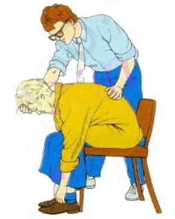
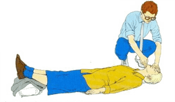
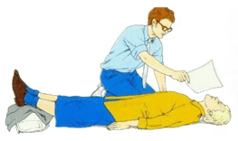
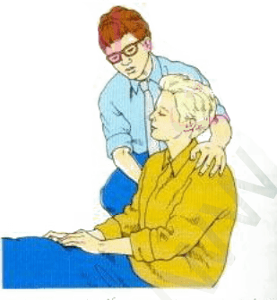

الاغماء
الاغماء
الصرع
-
الاغماء
الاعراض والعلامات
- يكون النبض بطيئاً في المرحلة الاولى
قد يكون المصاب شاحباً جداً
الوقاية
- اذا كان المصاب في استعراض او ضمن تجمع من الناس انصحه بأن يثني عضلات الساق واصابع القدمين لمساعدة الدورات
- واذا شعر المصاب بأنه غير متماسك اجلسه ,وساعده على الانحناء الى الامام ووضع رأسه بين ركبتيه واطلب اله ان
يتنفس بعمق

تنبه*
- لا تعطِ المصاب اي شي عن طريق الفم حتى يعود اليه وعيه بالكامل ,ولا تعطيه اي مشروب كحولي
المعالجة
- عندما يغمى على المصاب,ارقده وارافع ساقيه وابق مسلك الهواء لديه مفتوحا

- فك اي ملابس مشدودة على الرقبة او الصدر او الخصر وذالك لمساعدة دروان الدم والتنفس

- تأكد من ان المصاب يحصل على الكثير من الهواء الطلق . ضعه في تيار من الهواء المنعش وهو امام وجهه وضعه في الظل
اذا لزم الامر
- طمئنه وهو يعود الى وعيه ,وارفعه بالتدريج حتى يصل الى وضع الجلوس

- تحقق من وجود اصابات لحقت به اثناء السقوط وعالجها
- اذا لم يبدأ المصاب في استعادة وعيه بسرعة ,افتح مسلك الهواء وتحقق من التنفس واعمل على انعاشه اذا وجدت لزوما
لذالك ,وضعه في وضع الافاقة ,واطلب العون الطبي بسرعة
-
الصرع
العلامات و الاعراض
- يفقد المصاب وعيه فجأة ويسقط على الأرض، وقد تندّ عنه صرخة غريبة.
- يتصلّب جسمه لبضع ثوان وقد يتوقف تنفسه لحظات، وكذلك يحتقن وجهه وعنقه وتتلون شفتاه بالزرقة.
- بعدها تسترخي عضلاته، ثم يأخذ بالتشنج والتخبط.
- في مرحلة التشنج والتخبط هذه، التي قد تستغرق بضع دقائق، يصبح تنفس المصاب عسيراً، ويصدر أصواتاً عالية من بين فكيه المطبقين بإحكام، وقد يخرج الزبد من فمه مختلطاً ببعض آثار الدم إذا عضّ لسانه أو شفتيه أثناء النوبة، وقد يفقد سيطرته على مثانته أو أمعائه.
- أخيراً، ترتخي عضلات المصاب بشكل كامل، مع أنه يبقى فاقداً وعيه لبضع دقائق أو أطول من ذلك.
المعالجة
- لا تحاول كبح اختلاجات المصاب أثناء النوبة أو تقييد حركاته.
- لا تضع شيئا بين أسنان المصاب أثناء النوبة (بما في ذلك أصابعك).
- لا تحرك المصاب من مكانه، ما لم يكن هناك خطر من بقائه فيه.
- لا تحاول "إيقاظ" المصاب، إذ إنه لا يستطيع ذلك.
- لا تجرب طريقة التنفس الاصطناعي معه، حتى ولو تلون وجهه بالزرقة.
- لا تعطه أي طعام أو شراب حتى يعود إلى كامل وعيه.
- لا تطلب سيارة الإسعاف إلا إذا تعرض المصاب لعدة نوبات متلاحقة أو إذا دام فقدان وعيه لأكثر من ربع ساعة (وهذا أمر نادر الحدوث).